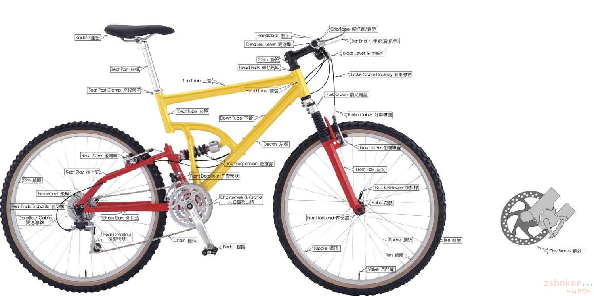

自行车部件专业英语
原文：http://www.zdche.com/forum/forum.php?mod=viewthread&action=printable&tid=14574

| bicycle and spare parts | 自行车及零件 |
| bicycle bell | 自行车车铃 |
| bicycle bottom bracket | 自行车底架 |
| bicycle brake | 自行车刹车 |
| bicycle chain lock | 自行车链条锁 |
| bicycle chain set | 自行车全链盒 |
| bicycle chain | 自行车链条 |
| bicycle chainwheel and crank | 自行车链轮曲柄 |
| bicycle dynamo | 自行车发电机 |
| bicycle ergomotor | 自行车功量仪 |
| bicycle expansion brake | 自行车涨闸 |
| bicycle external gear-shaft | 自行车外变速器 |
| bicycle frame | 自行车架 |
| bicycle freewheel | 自行车飞轮 |
| bicycle front fork lock | 自行车前叉锁 |
| bicycle front fork | 自行车前叉 |
| bicycle gloves | 自行车手套 |
| bicycle hand brake | 自行车手闸 |
| bicycle handle bar | 自行车车把 |
| bicycle handle grip | 自行车把套 |
| bicycle hub brake | 自行车车轮闸 |
| bicycle light | 自行车灯 |
| bicycle lock | 自行车锁 |
| bicycle luggage carrier | 自行车行李架 |
| bicycle maker's pliers | 自行车钳 |
| bicycle mudguard | 自行车挡泥板 |
| bicycle of plastic wheel 塑料轮 | 自行车 |
| bicycle parts production line | 自行车零件生产线 |
| bicycle pedal | 自行车踏板 |
| bicycle pump | 自行车打气筒 |
| bicycle rim | 自行车钢圈 |
| bicycle saddle | 自行车鞍座 |
| bicycle safety fork | 自行车保险叉 |
| bicycle spare parts and accessories | 自行车零配件 |
| bicycle spoke | 自行车辐条 |
| bicycle stand | 自行车支架 |
| bicycle steel ball | 自行车钢珠 |
| bicycle tire pump | 自行车轮胎打气筒 |
| bicycle tube | 自行车内胎 |
| bicycle tyre and tube | 自行车内外胎 |
| bicycle tyre | 自行车外胎 |
| bicycle wind accelerator | 自行车风力增速器 |
| bicycle wrench | 自行车扳手 |
| axle | 轴 |
| pedal | 脚蹬 |
| saddle | 鞍座 |
| chain wheel | 轮盘 |
| clip band | 脚蹬套 |
| crank shaft | 脚蹬轴 |
| factory number | 出厂号码 |
| fender | 挡泥板 |
| footrest | 搁脚板 |
| rear light | 尾灯 |
| tandem bicyle | 双人自行车 |
| valve | 气门 |
| valve core | 气门芯 |
| valve sealing cap | 气门芯帽 |
| crossbar | 车架横梁 |
| Bicycle | 自行车 |
| Tire | 轮胎 |
| Rim | 轮圈 |
| Seat post | 座杆 |
| Seat post clamp | 座杆束子 |
| Rear brake | 后刹车 |
| Front brake | 前刹车 |
| Seat stay | 后上叉 |
| Chain stay | 后下叉 |
| Seat tube | 座管 |
| Top tube | 上管 |
| Down tube | 下管 |
| Freewheel / cassette Sprockets | 飞轮 |
| Rear Ends/Dropouts | 后叉端 |
| Derailleur Cable | 变速导线 |
| Rear Derailleur | 后变速器 |
| Chain | 链条 |
| Pedal | 脚踏 |
| Front Derailleur | 前变速器 |
| individual race | 个人追逐赛 |
| ability to sprint | 冲刺能力 |
| individual road race | 个人公路赛 |
| anchor wire | 制动杀带 |
| indoor cycle track | 室内赛车场 |
| ascent | 上坡 |
| team pursuit race | 团体追逐赛 |
| a rain cape furnishes | 雨披装备 |
| cycle racing | 自行车竞赛 |
| asphalt road | 沥青柏油路 |
| inner track | 内圈跑道 |
| asphalt track | 沥青跑道 |
| number plate | 号码牌 |
| assembing place | 集合地点 |
| open event | 公开赛 |
| starting line | 起点线 |
| axle fracture | 车轴断裂 |
| team race | 团体赛 |
| back-pedal | 倒蹬 |
| curve | 弯道 |
| back straight | 非终点直道 |
| lap | 圈 |
| ball | 滚珠 |
| track | 赛车场 |
| ball bearing | 滚珠轴承 |
| treadle | 脚蹬 |
| bank dash | 弯道冲刺 |
| banked | 倾斜的 |
| banking | 倾斜(场地跑道) |
| bicycle ball | 车铃 |
| bicycle change | 换车 |
| bicycle lock,a wheel lock | 车锁,一种轮锁 |
| bicycle-paced racr | 自行车领先赛 |
| bicycle-racing | 自行车竞赛 |
| Rear suspension | 后避震 |
| Decals | 贴标 |
| Chainwheel&cranks | 大齿盘及曲柄 |
| Valve | 汽门嘴 |
| Spoke | 钢丝/辐条 |
| Nipple | 铜头 |
| Front fork end | 前叉端 |
| Hubs | 花鼓 |
| Quick release | 快拆杆 |
| Front fork | 前叉 |
| Brake cable | 刹车导线 |
| Front crown | 前叉肩盖 |
| Brake cable housing | 刹车导线 |
| Brake lever | 刹车握把 |
| Bar end | 小手把（副把手） |
| Grip/tape | 握把套 |
| Head tube | 头管 |
| Handlebar | 车手 |
| Derailleur lever | 变速杆 |
| Stem | 竖管 |
| Head parts | 车头碗组 |
| Kickstand | 停车柱 |
| Chain cover | 链盖 |
| Pump | 打气筒 |
| Mudguard | 挡泥板 |
| Water bottle | 水壶 |
| Lock | 锁 |
| Basket | 篮子 |
| Bell | 钤 |
| Head Light | 前灯 |
| Back mirror | 后照镜 |
| Reflector | 反光片 |
| Luggage Carrier | 货架 |
| MTB | 山地车 |
| DS--Dual Slalom | 速降对抗赛车 |
| DH--Down Hill | 速降车 |
| FS--Full Suspension | 全减震越野车 |
| XC--Cross Country | 越野车（通常为越野车） |
| Racing | 公路车 |
| T.T--Time Trial | 计时赛车 |
| Track | 场地车 |
| Road | 公路车 |
| Cycle cross | 公路越野车 |
| 3、Else | 休闲及其他种类 |
| BMX--Bicycle Motocross | 小轮车越野 |
| Bike Trial | 攀爬车，分为小轮和大轮两种，俗称大攀和小攀。 |
| Trekking | 登山越野车 |
| Cruiser | 旅游沙滩车 |
| Main Accessory | 主要部件 |
| Frameset（Frame） | 车架 |
| Fork | 前叉 |
| Suspension | 避震，前避震叫Fork，后避震叫Shock，一般不用Suspension |
| Crankset | 大齿盘 |
| Bottom Bracket（BB） | 中轴（简称BB） |
| Transmission | 传动部件 |
| Derailleur | 拨链器 变速器 |
| Shift Cables | 变速线 |
| Shift Lever set | 变速手把 手拨 |
| Cassette Sprockets | 飞轮，一般就直接说成Cassette |
| Brake System | 刹车系统 |
| Brake | 刹车 |
| V-Brake | V型刹车 |
| Disc-Brake | 碟刹 |
| Handelbar | 把横 |
| Aheadset Stem（stem） | 把立 |
| Cartridge Headset | 车头碗组（前叉碗 ），一般就直接说Headset |
| Brake cables | 刹车线 |
| Else | 其他 |
| Crank | 曲柄（公路赛车） |
| Pedals | 脚踏 |
| Wheel | 车轮 |
| Tire | 车胎 |
| tube | 内胎 |
| Hub | 花鼓，车轮轴 |
| Saddle | 车座 |
| Seatpost | 座管 |
| Bar End | 副把 |
| wheelset | 轮组 |
| Grip | 把套 |
| Weight | 车重 |
| Ski pad | 护盘 |
| Chain tensioner | 拉链片 |
| Bar | 把手 |
| R-rim | 后圈 |
| Seat | 座包 |